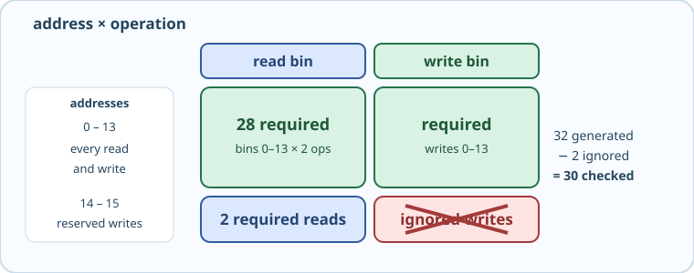

A cross collector has this reusable shape:
covergroup <group>; <name_a>: coverpoint <signal_a>; <name_b>: coverpoint <signal_b>; <pair_bins>: cross <name_a>, <name_b>; endgroup
Individual coverpoints track signals in isolation. Cross coverage tracks combinations — it creates a bin for every pair, proving that every address was both read and written:

The two independent coverpoints can reach 100% without proving any address-operation pair. The starter includes a cross_ready guard so that vacuous result cannot look complete.
addr \ op │ read │ write ───────────┼──────┼─────── 0 – 13 │ ✓ │ ✓ ← 28 cross bins 14 – 15 │ ✓ │ — ← 2 required read bins; writes ignored
The cross syntax creates one bin per combination of bins from two coverpoints:
addr_x_we: cross cp_addr, cp_we;
That single line creates 32 bins (16 addr x 2 ops). Addresses 14 and 15 are reserved — our sequence never writes them — so those 2 write-bins will always be empty. The remaining 30 bins are checked. Exclude the reserved pair with binsof and intersect:
ignore_bins no_write_reserved =
binsof(cp_addr.addr) intersect {14, 15} &&
binsof(cp_we.writes);
Open mem_coverage.sv and complete three things inside the covergroup:
addr_x_we cross of cp_addr and cp_weignore_bins for reserved write addresses (14 and 15)cross_ready = 1, then use the cross result to confirm every required address-operation pair
binsof(cp.bin) intersect {values}selects only those bins whose values overlap the set. This is how you surgically exclude specific cross combinations without removing a whole coverpoint.